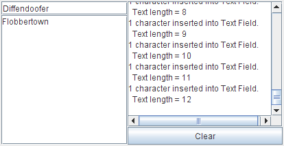

How to Write a Document Listener
A Swing text component uses a

Try this:
Document listeners should not modify the contents of the document;
The change is already complete
by the time the listener is notified of the change.
Instead, write a custom document that overrides the
Document to represent its content.
Document events occur when the content of a document changes in any way.
You attach a document listener to a text component's document,
rather than to the text component itself.
See
Implementing a Document Filterfor more information.
The following example demonstrates document events on two plain text components.
Try this:
- Click the Launch button to run DocumentEventDemo using
Java™ Web Start (download JDK 6).
Alternatively, to compile and run the example yourself, consult the
example index.

- Type in the text field at the upper left of the window
or the text area beneath the text field.
One document event is fired for each character typed. - Delete text with the backspace key.
One document event is fired for each backspace key typed. - Select text and then delete it by typing backspace
or by using a keyboard command such as
CTRL-X(cut).
One document event is fired for the entire deletion. - Copy text from one text component into the other
using keyboard commands such as
CTRL-C(copy) andCTRL-V(paste).
One document event is fired for the entire paste operation regardless of the length of the text pasted. If text is selected in the target text component before the paste command is issued, an additional document event is fired because the selected text is deleted first.
You can find the demo's code in
DocumentEventDemo.java.
Here is the demo's document event handling code:
public class DocumentEventDemo ... {
...//where initialization occurs:
textField = new JTextField(20);
textField.addActionListener(new MyTextActionListener());
textField.getDocument().addDocumentListener(new MyDocumentListener());
textField.getDocument().putProperty("name", "Text Field");
textArea = new JTextArea();
textArea.getDocument().addDocumentListener(new MyDocumentListener());
textArea.getDocument().putProperty("name", "Text Area");
...
class MyDocumentListener implements DocumentListener {
String newline = "\n";
public void insertUpdate(DocumentEvent e) {
updateLog(e, "inserted into");
}
public void removeUpdate(DocumentEvent e) {
updateLog(e, "removed from");
}
public void changedUpdate(DocumentEvent e) {
//Plain text components do not fire these events
}
public void updateLog(DocumentEvent e, String action) {
Document doc = (Document)e.getDocument();
int changeLength = e.getLength();
displayArea.append(
changeLength + " character" +
((changeLength == 1) ? " " : "s ") +
action + doc.getProperty("name") + "." + newline +
" Text length = " + doc.getLength() + newline);
}
}
insertString or remove methods, or both.
See
Listening for Changes on a Document for details.
The Document Listener API
The DocumentListener Interface
DocumentListener has no adapter class.
| Method | Purpose |
|---|---|
| changedUpdate(DocumentEvent) | Called when the style of some of the text in the
listened-to document changes.
This sort of event is fired only from a StyledDocument
— a PlainDocument does not fire these events.
|
| insertUpdate(DocumentEvent) | Called when text is inserted into the listened-to document. |
| removeUpdate(DocumentEvent) | Called when text is removed from the listened-to document. |
Each document event method is passed an object that implements
the DocumentEvent interface. Typically, this is an
instance of
DefaultDocumentEvent, defined in AbstractDocument.
| Method | Purpose |
|---|---|
| Document getDocument() | Returns the document that fired the event. Note that the
DocumentEvent interface does not inherit from
EventObject. Therefore, it does not inherit
the getSource method.
|
| int getLength() | Returns the length of the change. |
| int getOffset() | Returns the location within the document of the first character changed. |
| ElementChange getChange(Element) | Returns details about what elements in the document have
changed and how.
ElementChange is an interface defined
within the DocumentEvent interface.
|
| EventType getType() | Returns the type of change that occurred.
EventType is a class defined
within the DocumentEvent interface
that enumerates the possible
changes that can occur on a document:
insert text, remove text, and change text style.
|
Examples that Use Document Listeners
The following table lists the examples that use document listeners.
| Example | Where Described | Notes |
|---|---|---|
DocumentEventDemo
|
This section | Reports all document events that occur on the documents for both a text field and a text area. One listener listens to both text components and uses a client property on the document to determine which component fired the event. |
TextComponentDemo
|
Listening for Changes on a Document | Updates a change log every time text in the listened-to document changes.
The document in this example supports styled text,
so changedUpdate gets called in this example.
Requires this additional source file:
DocumentSizeFilter
|